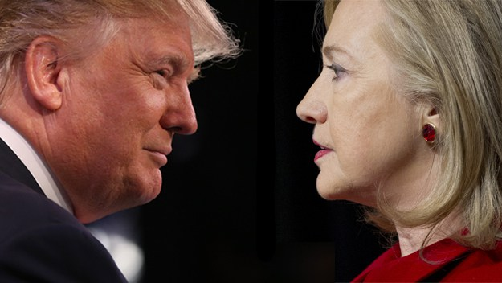
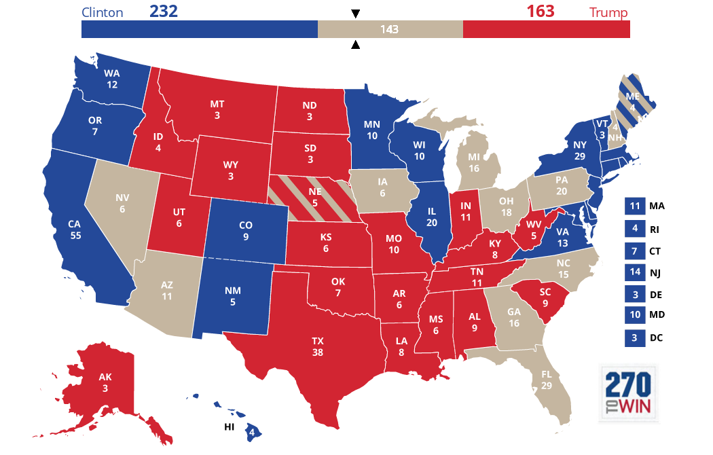
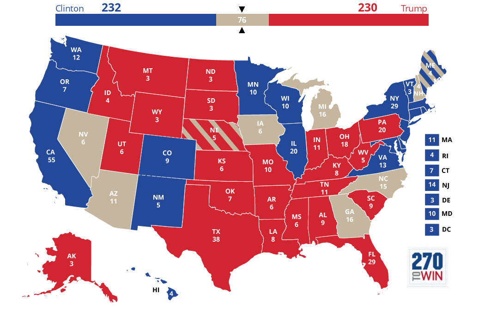
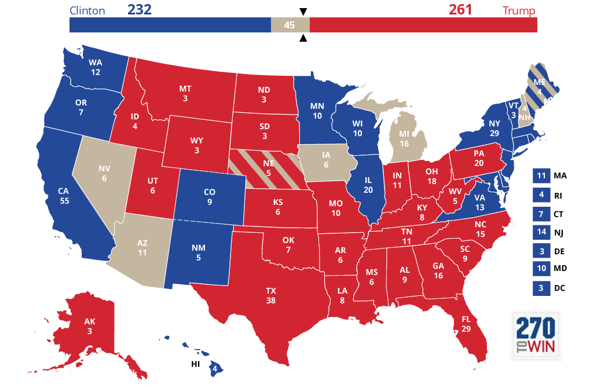
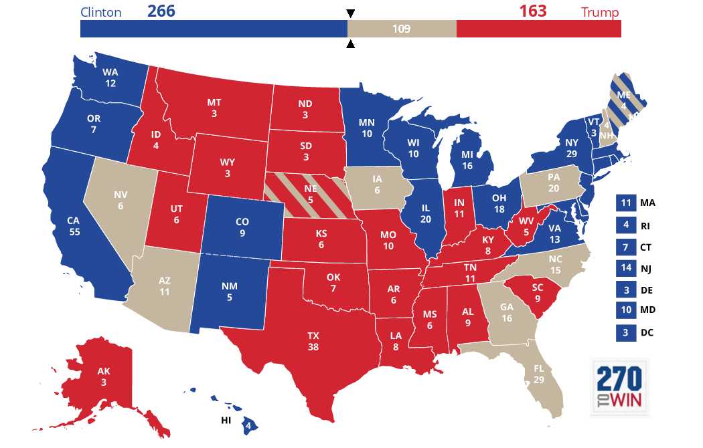
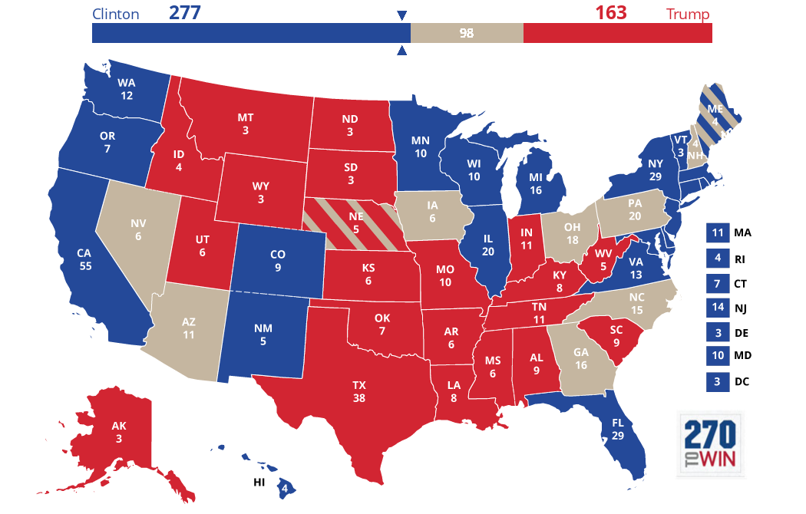
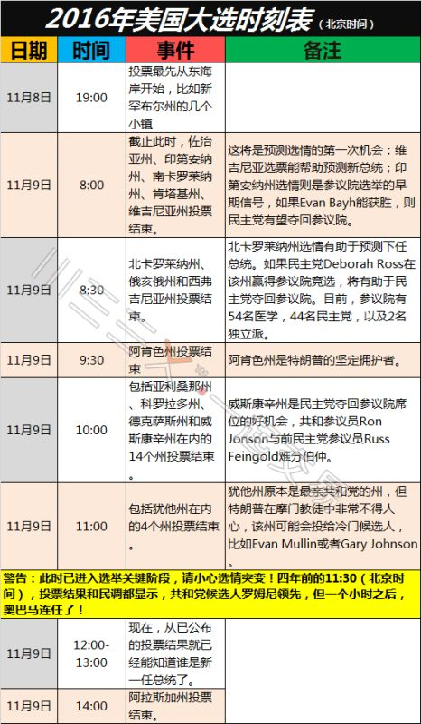

前几天很忙，都没空上博客处理评论。今天凌晨终于抽出空，到博客管理界面，把几十条被 Google 误判为垃圾广告的读者留言全部恢复出来了。
今晚或明天，如果有空的话，俺会去前一篇博文回复读者评论。

就在俺发布这篇博文的时候，美国东部某些州已经开始进行投票了。
为啥俺等到投票的前一刻才发这篇博文？因为这次美国大选的局面太微妙了，光是“十月惊奇”就出了好几次。不到最后一刻，你都不知道选情是否会大变。
本文的这些分析，都是基于“州一级的民调”。但是今年的大选，民调可能会有严重偏差（下面会解释这点）。所以下面这些分析，很可能是错的，大伙儿姑且听之，别太当真 :)
考虑到某些同学不太熟悉美国选举制度，先简单扫盲一下相关知识。
如果你已经了解这些，请跳过这一章节，看后续内容。
根据美利坚合众国宪法第二条，总统由各州的【选举人】组成“选举人团”投票选出（所以美国选总统，不是“直接选举”，而是“间接选举”）。
每个州的“选举人”人数等于该州的“参议员人数”加上“众议员人数”。由于每州的参议员固定为2人，所以各个州的“选举人人数”的差异体现为“众议员人数差异”。人口大州的众议员人数多，选举人的数量也多。（各州的众议员数量是根据当地人口划定，随着人口变迁，各州的众议员数量会出现微调）
另外，首都（华盛顿哥伦比亚特区）有3张选举人票。这是根据1960年的宪法第23修正案——首都可以拥有“选举人”，且选举人的人数【不得超过】人口最少的州的选举人人数。（美国人口最少的州是怀俄明州，拥有3张选举人票；而华盛顿特区的人口超过怀俄明，占有3票也不算过分）。
最近这些年的大选，选举人票的总数是538（100名参议员 + 435名众议员 + 哥伦比亚特区3票）。
对于总票数538，过半的当选门槛是270票。
除缅因州及内布拉斯加州外，其它48个州及首都华盛顿特区均采用【赢家通吃】的方式——获得最多票数的那个候选人【全取】该州的选举人票。
至于“缅因州及内布拉斯加州”，获最多票的候选人会取得两张选举人票，而其余的选举人票会按照“本州各个众议员选区的党派分布”进行分配。
大部分的州在最近几十年的选举中始终被某个大党赢得，这种州就称为“安全州”。比如“加州/CA”是民主党最大的安全州（55票），“德州/TX”是共和党最大的安全州（38票）。
因为安全州没有悬念，在每次大选中，两党通常都不会花太多精力在安全州。
相比“安全州”，那些两党选情很接近的州，称为“摇摆州”。“摇摆州”是每次大选的主战场。两党的候选人都要想尽办法去摇摆州拉票。
在“摇摆州”里面，选举人数比较多并且摇摆得比较明显的，属于“关键摇摆州”。在最近几十年的大选，“关键摇摆州”有三个：“佛罗里达/FL”（29票）、“宾夕法尼亚/PA”（20票）、“俄亥俄/OH”（18票）。
自1960年以来，【所有】当选者，至少在这三个“关键摇摆州”中拿下两个。换句话说：半个世纪以来，没有拿到2个或2个以上“关键摇摆州”的候选人，都落选了。
今年的大选完全不同于往年，简单归纳为如下几点：
1.
以前的大选，两大党的候选人相对还是比较斯文的。
今年就不同了，火药味特强（远超以往）。看电视辩论就能感觉到。
2.
今年的大选，两个主要候选人的负面评价都很多。
3.
今年是女性首次成为【大党】的候选人。
有相当多的美国选民，未必做好“女总统”的思想准备。
4.
今年的共和党候选人川普，是共和党历史上最另类的一个。
由于他太另类，以至于很多共和党的大佬公开表态要投票给民主党（可能是共和党历史上首次出现这种现象）。
5.
今年有很显著的民粹情绪。
共和党的川普就不用说了（依靠民粹，在初选时横扫党内所有大佬）；
即使在民主党那边，桑德斯在党内初选也获得了39%（1865/4763）的代表票，让希拉里吓出一身汗。
6.
今年的民调可能会很【不准】。因为有很多选民是【潜在的】川普支持者。
这些人里面，有些是讨厌“政治正确”，还有些人尚无法在心理上接受一位女性总统。所以，这些人在民调的时候不会说他们支持川普，但是在投票的时候会投给川普。
很多同学只看全国民调结果，容易被误导。前面说了，美国大选【不是】直选，而是间接选举，并且有一个【赢家通吃】的游戏规则。所以全国的支持率，【不】能说明问题；更重要的是看摇摆州的民调——其参考意义明显大于全国民调。
举个栗子：2000年大选的时候，民主党的戈尔，全国民调超过共和党的小布什；但是选举人票，反而输给小布什。
下面俺引述选举网站（www.270towin.com）提供的数据和图片。
下面这张是投票前预估的各州选情（蓝色的民主党的安全州，红色是共和党的安全州）。带有斜条纹的那两个州，就是前面提到的“缅因州、内布拉斯加州”。这两个州【没有】搞“赢家通吃”。
算上各自的【安全州】，希拉里有望得到232票，川普有望得到163票。这种情况下，川普的选举人票距离当选门槛（270）还有不少差距。

假设三个关键摇摆州都被川普拿下（下图），他的选举人票数就跟希拉里差不多了（230 vs 232）。

假如川普拿下上述3个州，说明他的形势很好；那么他就有很大可能性搞定“北卡/NC”（15）和“佐治亚/GA”（16），局面就变成下面这样——川普得到 261，已经很接近当选门槛了。这种局面对希拉里就很危险了。

前面提到三个关键摇摆州——“佛罗里达/FL”（29）、“宾夕法尼亚/PA”（20）、“俄亥俄/OH”（18）。希拉里如果能拿下【任何两个】（哪怕最小的2个），她就已经达到当选门槛的270票（如下图）。

这三个“关键摇摆州”，如果希拉里【只拿下了一个】，那说明选情对她很不利。这种局面下，民主党多半无法保住南部的“北卡/NC”（15）和“佐治亚/GA”（16）；此时她只能寄希望于拿下“密歇根州/MI”（16）。
三个“关键摇摆州”的票数差别还是挺大的——
如果希拉里只拿下了三个“关键摇摆州”中最小的“俄亥俄/OH”（18），丢了另外2个。这种局面下，就算她搞定“密歇根州/MI”的16票，也还没有到当选门槛（266），需要再搞定某个摇摆州；

反之，如果她搞定了三个“关键摇摆州”中最大的“佛罗里达/FL”（29），丢了另外2个。再加上“密歇根州/MI”的16票，就超过门槛了（277）。

说到“密歇根州/MI”，有必要强调一下：
在前几次的大选中，该州都被民主党视为安全州（该州上次支持共和党，还是在遥远的1988年）。但是今年的形势让该州也成为摇摆州——因为该州有大量的白人蓝领工人，而这个群体是川普的铁杆支持者。所以双方阵营都在昨天赶往“密歇根州/MI”拉票，进行选前的最后冲刺。
前面分别讨论了希拉里拿下“2个关键摇摆州”或者拿下“1个关键摇摆州”的情况。有同学可能会问了：万一希拉里连一个关键摇摆州都没有搞定，会怎样捏？俺觉得：如果出现这种情况，她肯定输掉了。
前面俺说了：今年的民调可能会很【不准】。上述这些选举地图，都是依赖于“州一级”的民调。如果民调出现显著偏差，上述这些分析的结果，就没有参考意义了。今年大选的悬念，也正在于此。
前面聊到的那几个兵家必争之地，都在美国东部。等到明天中午（北京时间11月9日12点），差不多就可以知道结果如何了。

由于选举人的总票数是偶数，自然存在“平手”的可能性。美国的选举法律规定：出现这种情况，由众议院投票选出总统。目前的众议院是共和党占多数，因此“选举人票”打平手会让川普当选（但是考虑到共和党议员有很多是反川普的，或许会出现变数中的变数）。
这种事情在2000年大选时出现过。当时佛罗里达州的票数很接近，貌似只相差几千或几百。而且佛州的结果会左右整个大选的结果，而且该州的州长是小布什的亲弟弟。
结果引发了民主党阵营的质疑，并要求重新计票。双方（小布什 vs 戈尔）把官司一直打到最高法院......
在大选前的第三场（最后一场）辩论中，川普虽然没明说，但已经流露出这种倾向。
假如川普最后输掉，但是他在某个摇摆州的票数与希拉里很接近，并且这个摇摆州翻盘会导致大选结果翻盘，那么川普有可能会抵制选举结果。
一旦出现这种局面，将引发宪政危机。
不过俺觉得：出现这种囧事的概率不大。即使出现了，以美国政治体制的成熟度（完善的制衡机制），也可以有惊无险地渡过此宪政危机。
（关于美国政体的制衡机制，可以参见之前的博文：《聊聊美国政体中的权力制衡——不仅仅是三权分立》）
本文发出后，有读者在评论中提及“失信选举人”的案例，所以俺特地补充了这一小节。
美国的选举历史上，出现好几个“失信选举人”的案例。所谓的“失信选举人”，就是说他/她代表自己的州去首都投票选总统，本来这个人投的票应该反应本州选民的意愿，但是有些选举人由于某些原因（私心，粗心），把选举人票投给了另一个总统候选人。这种行为就会造成实际的选举人投票结果，与民众大选结果不一致。
由于这种事情很少见，而且每次出现都【没有】影响到最终的选举结果，所以至今为止没有出现相关诉讼，最高法院也就没有对此进行违宪审查。
俺个人认为：出现“失信选举人”并逆转选举人投票结果，这种概率太低，不用考虑这种情况。
俺博客上，和本文相关的帖子（需翻墙）：
聊聊美国政体中的权力制衡——不仅仅是三权分立
美国选举制度为啥这样设计？——兼谈其历史演变
扫盲常见的政治体制
中美政府信息监控的差异——"棱镜门"丑闻随想
闲聊中美文化差异——9·11十周年随想
分析“制度性腐败”——为啥天朝的贪官屡禁不止？
今晚或明天，如果有空的话，俺会去前一篇博文回复读者评论。
就在俺发布这篇博文的时候，美国东部某些州已经开始进行投票了。
为啥俺等到投票的前一刻才发这篇博文？因为这次美国大选的局面太微妙了，光是“十月惊奇”就出了好几次。不到最后一刻，你都不知道选情是否会大变。
本文的这些分析，都是基于“州一级的民调”。但是今年的大选，民调可能会有严重偏差（下面会解释这点）。所以下面这些分析，很可能是错的，大伙儿姑且听之，别太当真 :)
★预备知识
考虑到某些同学不太熟悉美国选举制度，先简单扫盲一下相关知识。
如果你已经了解这些，请跳过这一章节，看后续内容。
◇选举人 / 选举人票
根据美利坚合众国宪法第二条，总统由各州的【选举人】组成“选举人团”投票选出（所以美国选总统，不是“直接选举”，而是“间接选举”）。
每个州的“选举人”人数等于该州的“参议员人数”加上“众议员人数”。由于每州的参议员固定为2人，所以各个州的“选举人人数”的差异体现为“众议员人数差异”。人口大州的众议员人数多，选举人的数量也多。（各州的众议员数量是根据当地人口划定，随着人口变迁，各州的众议员数量会出现微调）
另外，首都（华盛顿哥伦比亚特区）有3张选举人票。这是根据1960年的宪法第23修正案——首都可以拥有“选举人”，且选举人的人数【不得超过】人口最少的州的选举人人数。（美国人口最少的州是怀俄明州，拥有3张选举人票；而华盛顿特区的人口超过怀俄明，占有3票也不算过分）。
最近这些年的大选，选举人票的总数是538（100名参议员 + 435名众议员 + 哥伦比亚特区3票）。
对于总票数538，过半的当选门槛是270票。
◇赢家通吃（winner-takes-all）
除缅因州及内布拉斯加州外，其它48个州及首都华盛顿特区均采用【赢家通吃】的方式——获得最多票数的那个候选人【全取】该州的选举人票。
至于“缅因州及内布拉斯加州”，获最多票的候选人会取得两张选举人票，而其余的选举人票会按照“本州各个众议员选区的党派分布”进行分配。
◇安全州
大部分的州在最近几十年的选举中始终被某个大党赢得，这种州就称为“安全州”。比如“加州/CA”是民主党最大的安全州（55票），“德州/TX”是共和党最大的安全州（38票）。
因为安全州没有悬念，在每次大选中，两党通常都不会花太多精力在安全州。
◇摇摆州
相比“安全州”，那些两党选情很接近的州，称为“摇摆州”。“摇摆州”是每次大选的主战场。两党的候选人都要想尽办法去摇摆州拉票。
◇关键摇摆州
在“摇摆州”里面，选举人数比较多并且摇摆得比较明显的，属于“关键摇摆州”。在最近几十年的大选，“关键摇摆州”有三个：“佛罗里达/FL”（29票）、“宾夕法尼亚/PA”（20票）、“俄亥俄/OH”（18票）。
自1960年以来，【所有】当选者，至少在这三个“关键摇摆州”中拿下两个。换句话说：半个世纪以来，没有拿到2个或2个以上“关键摇摆州”的候选人，都落选了。
★今年大选的特殊之处
今年的大选完全不同于往年，简单归纳为如下几点：
1.
以前的大选，两大党的候选人相对还是比较斯文的。
今年就不同了，火药味特强（远超以往）。看电视辩论就能感觉到。
2.
今年的大选，两个主要候选人的负面评价都很多。
3.
今年是女性首次成为【大党】的候选人。
有相当多的美国选民，未必做好“女总统”的思想准备。
4.
今年的共和党候选人川普，是共和党历史上最另类的一个。
由于他太另类，以至于很多共和党的大佬公开表态要投票给民主党（可能是共和党历史上首次出现这种现象）。
5.
今年有很显著的民粹情绪。
共和党的川普就不用说了（依靠民粹，在初选时横扫党内所有大佬）；
即使在民主党那边，桑德斯在党内初选也获得了39%（1865/4763）的代表票，让希拉里吓出一身汗。
6.
今年的民调可能会很【不准】。因为有很多选民是【潜在的】川普支持者。
这些人里面，有些是讨厌“政治正确”，还有些人尚无法在心理上接受一位女性总统。所以，这些人在民调的时候不会说他们支持川普，但是在投票的时候会投给川普。
★选举地图
◇选举地图的重要性
很多同学只看全国民调结果，容易被误导。前面说了，美国大选【不是】直选，而是间接选举，并且有一个【赢家通吃】的游戏规则。所以全国的支持率，【不】能说明问题；更重要的是看摇摆州的民调——其参考意义明显大于全国民调。
举个栗子：2000年大选的时候，民主党的戈尔，全国民调超过共和党的小布什；但是选举人票，反而输给小布什。
下面俺引述选举网站（www.270towin.com）提供的数据和图片。
◇目前的态势
下面这张是投票前预估的各州选情（蓝色的民主党的安全州，红色是共和党的安全州）。带有斜条纹的那两个州，就是前面提到的“缅因州、内布拉斯加州”。这两个州【没有】搞“赢家通吃”。
算上各自的【安全州】，希拉里有望得到232票，川普有望得到163票。这种情况下，川普的选举人票距离当选门槛（270）还有不少差距。
◇对川普而言
假设三个关键摇摆州都被川普拿下（下图），他的选举人票数就跟希拉里差不多了（230 vs 232）。
假如川普拿下上述3个州，说明他的形势很好；那么他就有很大可能性搞定“北卡/NC”（15）和“佐治亚/GA”（16），局面就变成下面这样——川普得到 261，已经很接近当选门槛了。这种局面对希拉里就很危险了。
◇对希拉里·克林顿而言
前面提到三个关键摇摆州——“佛罗里达/FL”（29）、“宾夕法尼亚/PA”（20）、“俄亥俄/OH”（18）。希拉里如果能拿下【任何两个】（哪怕最小的2个），她就已经达到当选门槛的270票（如下图）。
这三个“关键摇摆州”，如果希拉里【只拿下了一个】，那说明选情对她很不利。这种局面下，民主党多半无法保住南部的“北卡/NC”（15）和“佐治亚/GA”（16）；此时她只能寄希望于拿下“密歇根州/MI”（16）。
三个“关键摇摆州”的票数差别还是挺大的——
如果希拉里只拿下了三个“关键摇摆州”中最小的“俄亥俄/OH”（18），丢了另外2个。这种局面下，就算她搞定“密歇根州/MI”的16票，也还没有到当选门槛（266），需要再搞定某个摇摆州；
反之，如果她搞定了三个“关键摇摆州”中最大的“佛罗里达/FL”（29），丢了另外2个。再加上“密歇根州/MI”的16票，就超过门槛了（277）。
说到“密歇根州/MI”，有必要强调一下：
在前几次的大选中，该州都被民主党视为安全州（该州上次支持共和党，还是在遥远的1988年）。但是今年的形势让该州也成为摇摆州——因为该州有大量的白人蓝领工人，而这个群体是川普的铁杆支持者。所以双方阵营都在昨天赶往“密歇根州/MI”拉票，进行选前的最后冲刺。
前面分别讨论了希拉里拿下“2个关键摇摆州”或者拿下“1个关键摇摆州”的情况。有同学可能会问了：万一希拉里连一个关键摇摆州都没有搞定，会怎样捏？俺觉得：如果出现这种情况，她肯定输掉了。
◇再罗嗦一下
前面俺说了：今年的民调可能会很【不准】。上述这些选举地图，都是依赖于“州一级”的民调。如果民调出现显著偏差，上述这些分析的结果，就没有参考意义了。今年大选的悬念，也正在于此。
★何时见分晓？
前面聊到的那几个兵家必争之地，都在美国东部。等到明天中午（北京时间11月9日12点），差不多就可以知道结果如何了。
★可能的变数
◇选举人票数相同
由于选举人的总票数是偶数，自然存在“平手”的可能性。美国的选举法律规定：出现这种情况，由众议院投票选出总统。目前的众议院是共和党占多数，因此“选举人票”打平手会让川普当选（但是考虑到共和党议员有很多是反川普的，或许会出现变数中的变数）。
◇某个州的票数太接近
这种事情在2000年大选时出现过。当时佛罗里达州的票数很接近，貌似只相差几千或几百。而且佛州的结果会左右整个大选的结果，而且该州的州长是小布什的亲弟弟。
结果引发了民主党阵营的质疑，并要求重新计票。双方（小布什 vs 戈尔）把官司一直打到最高法院......
◇川普不承认大选结果
在大选前的第三场（最后一场）辩论中，川普虽然没明说，但已经流露出这种倾向。
假如川普最后输掉，但是他在某个摇摆州的票数与希拉里很接近，并且这个摇摆州翻盘会导致大选结果翻盘，那么川普有可能会抵制选举结果。
一旦出现这种局面，将引发宪政危机。
不过俺觉得：出现这种囧事的概率不大。即使出现了，以美国政治体制的成熟度（完善的制衡机制），也可以有惊无险地渡过此宪政危机。
（关于美国政体的制衡机制，可以参见之前的博文：《聊聊美国政体中的权力制衡——不仅仅是三权分立》）
◇出现“失信选举人”并影响大选结果
本文发出后，有读者在评论中提及“失信选举人”的案例，所以俺特地补充了这一小节。
美国的选举历史上，出现好几个“失信选举人”的案例。所谓的“失信选举人”，就是说他/她代表自己的州去首都投票选总统，本来这个人投的票应该反应本州选民的意愿，但是有些选举人由于某些原因（私心，粗心），把选举人票投给了另一个总统候选人。这种行为就会造成实际的选举人投票结果，与民众大选结果不一致。
由于这种事情很少见，而且每次出现都【没有】影响到最终的选举结果，所以至今为止没有出现相关诉讼，最高法院也就没有对此进行违宪审查。
俺个人认为：出现“失信选举人”并逆转选举人投票结果，这种概率太低，不用考虑这种情况。
俺博客上，和本文相关的帖子（需翻墙）：
聊聊美国政体中的权力制衡——不仅仅是三权分立
美国选举制度为啥这样设计？——兼谈其历史演变
扫盲常见的政治体制
中美政府信息监控的差异——"棱镜门"丑闻随想
闲聊中美文化差异——9·11十周年随想
分析“制度性腐败”——为啥天朝的贪官屡禁不止？
版权声明
本博客所有的原创文章，作者皆保留版权。转载必须包含本声明，保持本文完整，并以超链接形式注明作者编程随想和本文原始地址：
https://program-think.blogspot.com/2016/11/2016-USA-Presidential-Election.html
本博客所有的原创文章，作者皆保留版权。转载必须包含本声明，保持本文完整，并以超链接形式注明作者编程随想和本文原始地址：
https://program-think.blogspot.com/2016/11/2016-USA-Presidential-Election.html